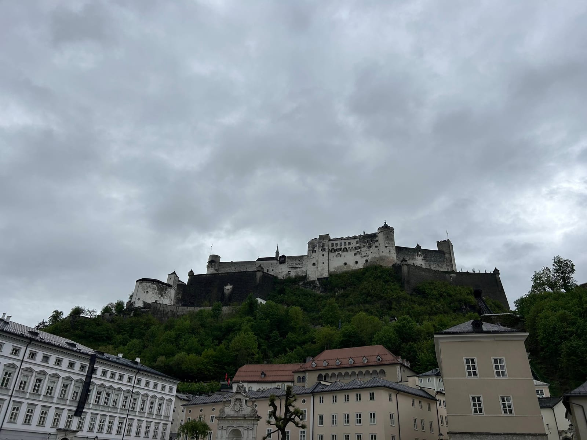
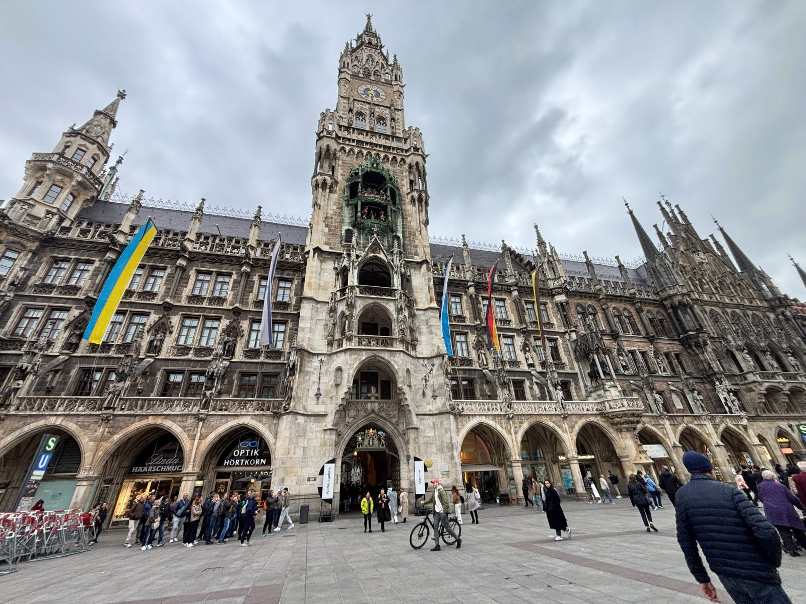
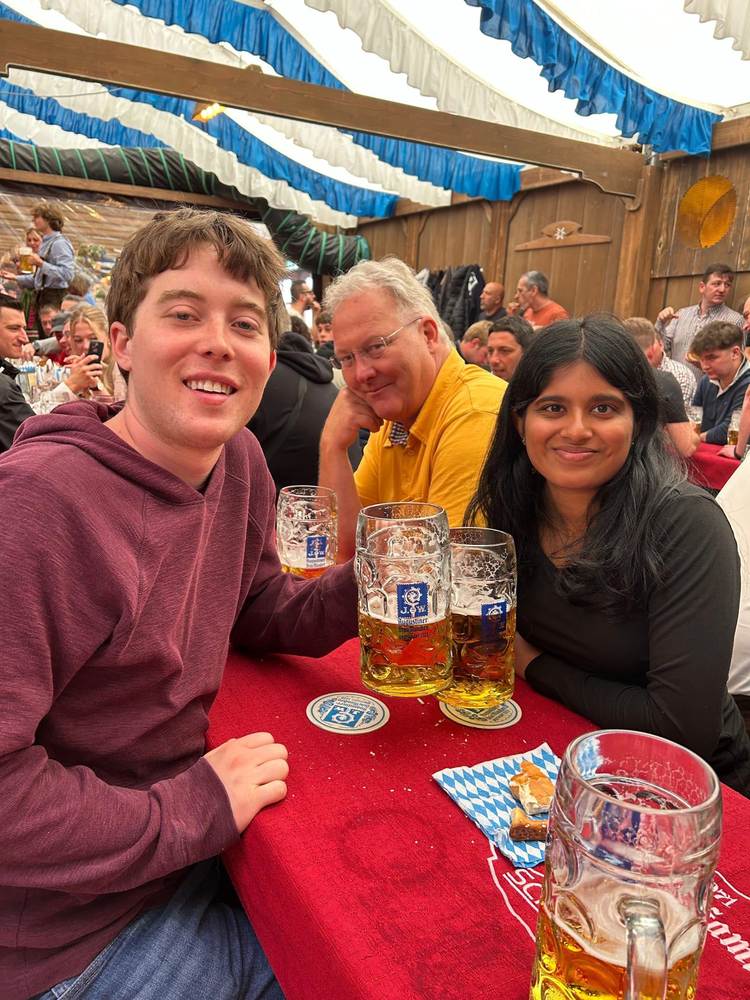
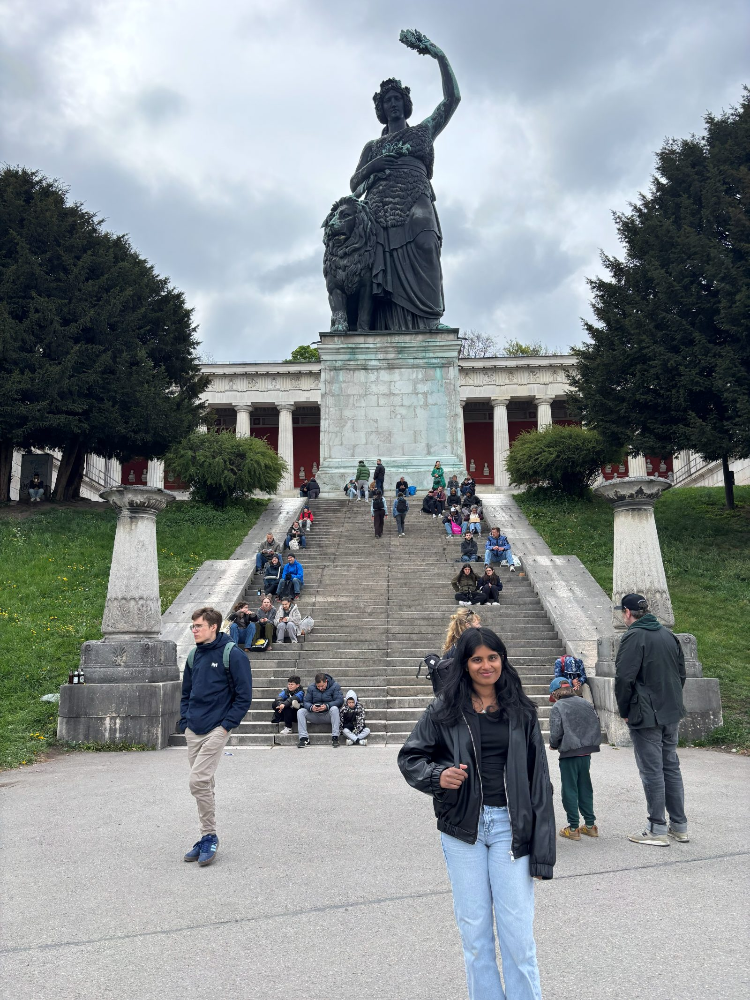
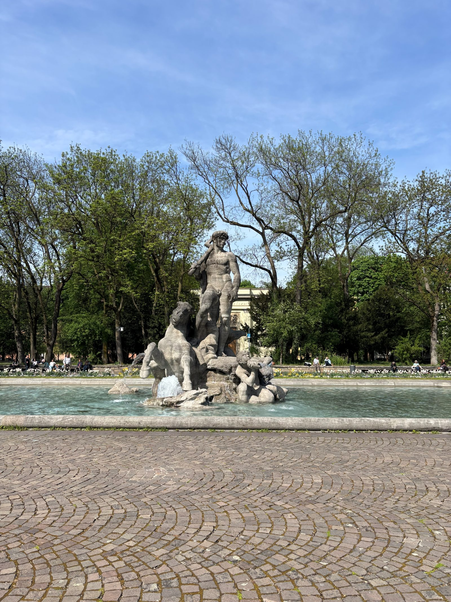

SALZBURG-MUNICH
Thursday (Travel)
- Left around 6:15 for our 8:55 flight
- Bussed to the Yoho hostel, showered, and slept by midnight
Friday (Salzburg)
- Got up and left around 8:40
- Hiked up to the fortress but didn't go in since it was like $12 each to enter

- Walked over to the cliffside Modern Art Museum for a nice view of the city
-
1 / 2
- Walked through Getreidegasse and got souvenirs
- Met with the walking tour group
- Got to see Mozart's apartment, birthplace, Sound of Music stuff, and some cool things the royalty did back in the 1600s
-
1 / 3
- Got to see Mozart's apartment, birthplace, Sound of Music stuff, and some cool things the royalty did back in the 1600s
- Got Mr. Wen's Asian food for lunch
- Great value for the price
- Walked back to Mirabell Palace to see the Marble Hall and gardens
-
1 / 3
- Picked up our bags and got on the 3:05 train to Munich
- Got to Munich at 5:06 and checked in to our Airbnb
- Walked around Marienplatz and got souvenirs and dinner
- Currywurst and käsespätzle

- Currywurst and käsespätzle
- Walked around Springfest but there was a huge line so we didn't go in the tent
- Saw BMW Welt
- Cool showroom with nice BMWs, Rolls Royces, and motorcycles
-
1 / 2
- Cool showroom with nice BMWs, Rolls Royces, and motorcycles
- Waited at Springfest in the rain for fireworks but we were mistaken and they never happened
- Went home, showered, watched tv, and slept
Saturday (Munich)
- Walked to Edeka for breakfast before getting to Springfest a little before 10
- Got a table and had 3 1L beers and a big pretzel

- Left at 3:45 and walked to the Bavaria Statue

- Got home and accidentally napped for five hours
- Got up at like 10 and went to McDonald's for dinner
- Ate in bed and watched tv
- Tried to sleep for a while but couldn't until after 2
Sunday (Munich)
- Got up at 6:45, got ready, and got on the 8:39 train to Füssen
- Transferred in Buchloe
- Got on the bus to Neuschwanstein a bit after 11:00
- Hiked up to the Mairenbrücke to see the castle from a nice viewpoint
-
1 / 3
- Hiked back down with some running so we could make the next bus back to town
- Got döner from next to the station and got on the 1:20 train back to Munich
- Walked around the area near the Munich Hauptbahnhof for 20ish minutes and grabbed dinner to-go for the train

- Got our bags from storage and waited a few minutes for the train to get there so that we could get a seat
- We didn't reserve one and our train wasn't bookable anymore so we were worried that it could get full and leave us standing
- They had added a car to the train that had 0 reserved seats so we easily had a table and 4 seats for ourselves to do our homework
- Got back to Berlin at 10:15 and went home